Event Study#
UNDER CONSTRUCTION
event study: CAR, BHAR, post-announcement drift (Kolari 2010 and others)
cross-sectional correlation: cross-correlation, convolution, FFT
multiple testing: Holm FWER, Benjamin-Hochberg FDR, Bonferroni p-values
S&P Key Developments
import numpy as np
import pandas as pd
from pandas import DataFrame, Series
import matplotlib.pyplot as plt
from scipy.stats import norm
from statsmodels.stats.multitest import multipletests
from tqdm import tqdm
from finds.database import SQL
from finds.busday import BusDay
from finds.structured import Benchmarks, Stocks, CRSP, PSTAT
from finds.backtesting import EventStudy
from finds.misc import Show
from secret import credentials, paths, CRSP_DATE
show = Show(ndigits=4, latex=None)
VERBOSE = 0
#
#%matplotlib qt
# open connections
sql = SQL(**credentials['sql'], verbose=VERBOSE)
user = SQL(**credentials['user'], verbose=VERBOSE)
bd = BusDay(sql)
keydev = PSTAT(sql, bd, verbose=VERBOSE)
crsp = CRSP(sql, bd, rdb=None, verbose=VERBOSE)
bench = Benchmarks(sql, bd, verbose=VERBOSE)
eventstudy = EventStudy(user, bench=bench, stocks=crsp, max_date=CRSP_DATE)
imgdir = paths['images'] / 'events'
Last FamaFrench Date 2023-04-28 00:00:00
Key developments#
# sorted list of all eventids and roleids, provided in keydev class
events = sorted(keydev._event.keys())
roles = sorted(keydev._role.keys())
# str formatter to pretty print descriptions, provided in keydev class
eventformat = lambda e, r: "{event} ({eventid}) {role} [{roleid}]"\
.format(event=keydev._event[e],
eventid=e,
role=keydev._role[r],
roleid=r)
Event study#
# event window parameters
left, right, post = -1, 1, 21
end = bd.offset(CRSP_DATE, post - left)
beg = 19890101 # 20020101
minobs = 250
# to lookup prevailing exchange and share codes by permno and date
shrcd = crsp.build_lookup('permno', 'shrcd')
exchcd = crsp.build_lookup('permno', 'exchcd')
# run event study after screening stock universe
def event_pipeline(eventstudy: EventStudy,
stocks: Stocks,
beg: int,
end: int,
eventid: int,
roleid: int,
left: int,
right: int,
post: int,
mincap: float = 300000.) -> DataFrame:
"""helper to merge keydev events and crsp, and screen stock universe"""
# Retrieve announcement dates for this event
df = keydev.get_linked(
dataset='keydev',
date_field='announcedate',
fields=['keydevid',
'keydeveventtypeid',
'keydevtoobjectroletypeid'],
where=(f"announcedate >= {beg} "
f" and announcedate <= {end}"
f" and keydeveventtypeid = {eventid} "
f" and keydevtoobjectroletypeid = {roleid}"))\
.drop_duplicates(['permno', 'announcedate'])\
.set_index(['permno', 'announcedate'], drop=False)
# Require in valid screen: 'cap', 'exchcd', 'shcrd'
stk = stocks.get_many(dataset='daily',
permnos=df['permno'],
date_field='date',
dates=stocks.bd.offset(df['announcedate'], left-1),
fields=['prc', 'shrout']).fillna(0)
df['cap'] = (stk['prc'].abs() * stk['shrout']).values
df['exchcd'] = [exchcd(row.permno, row.date) for row in stk.itertuples()]
df['shrcd'] = [shrcd(row.permno, row.date) for row in stk.itertuples()]
select = (df['cap'].gt(mincap) # require cap > $300M
& df['exchcd'].isin([1, 2, 3]) # primary exchange
& df['shrcd'].isin([10, 11])).values # domestic common stocks
# Call eventstudy to retrieve daily abnormal returns, with named label
rows = eventstudy(label=f"{eventid}_{roleid}",
df=df[select],
left=left,
right=right,
post=post,
date_field='announcedate')
return df.loc[rows.to_records(index=False).tolist()] # restrict df to rows
Show subsample plots for selected events
### Show by market cap and half-period
events_list = [[50, 1], [150, 1]] # top drift
midcap = 20000000 # arbitrary mid market cap breakpoint
for i, (eventid, roleid) in enumerate(events_list):
#eventid, roleid = 50, 1
#eventid, roleid = 83, 1
df = event_pipeline(eventstudy,
stocks=crsp,
eventid=eventid,
roleid=roleid,
beg=beg,
end=end,
left=left,
right=right,
post=post)
halfperiod = np.median(df['announcedate'])
sample = {'FirstHalf': df['announcedate'].ge(halfperiod).values,
'SecondHalf': df['announcedate'].lt(halfperiod).values,
'Large': df['cap'].ge(midcap).values,
'Small': df['cap'].lt(midcap).values,
'': []}
for ifig, (label, rows) in enumerate(sample.items()):
fig, ax = plt.subplots(clear=True, figsize=(10, 5))
bhar = eventstudy.fit(model='sbhar', rows=rows)
eventstudy.plot(model='sbhar',
title=eventformat(eventid, roleid) + f"[{label}]",
drift=True,
ax=ax,
c=f"C{i*5+ifig}")
plt.savefig(imgdir / (label + f"{eventid}_{roleid}.jpg"))
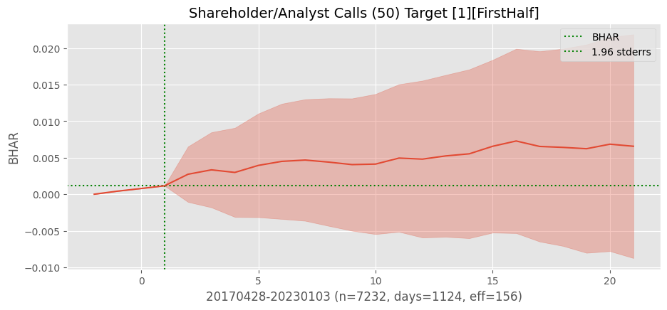
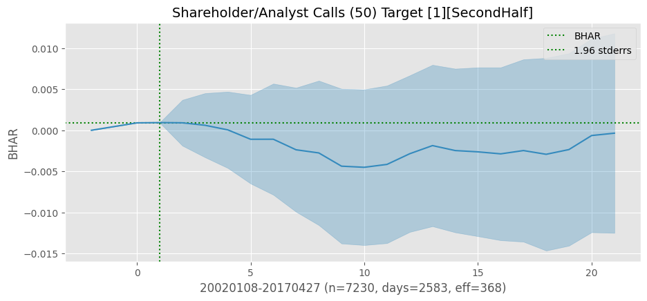
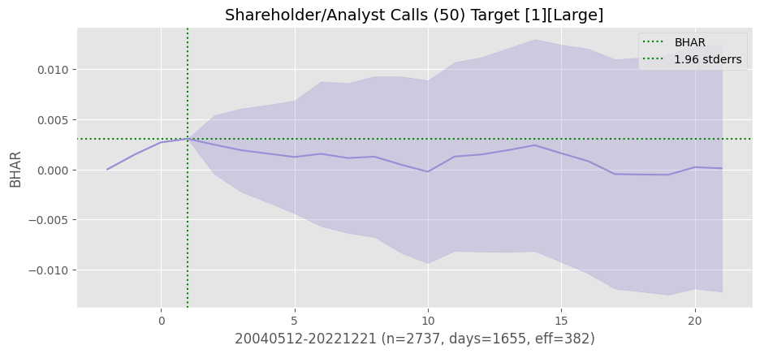
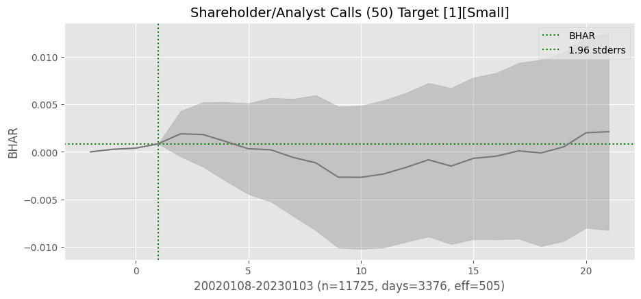
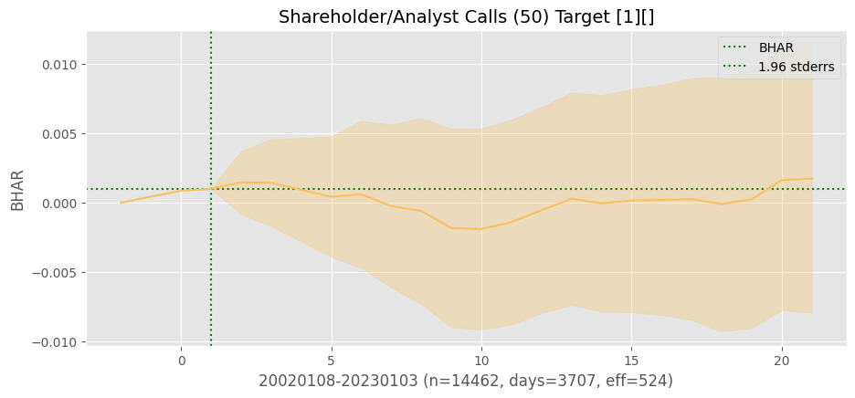
 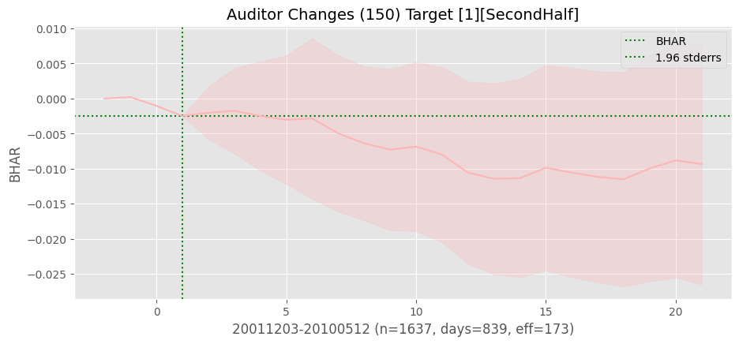
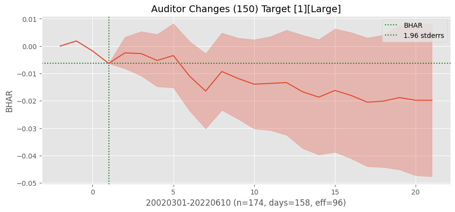
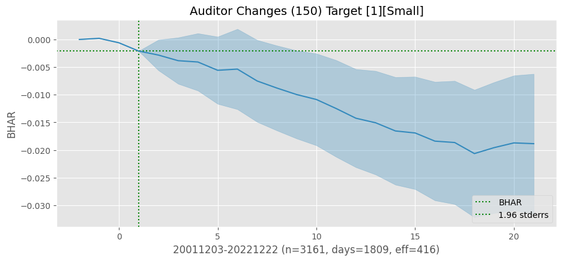
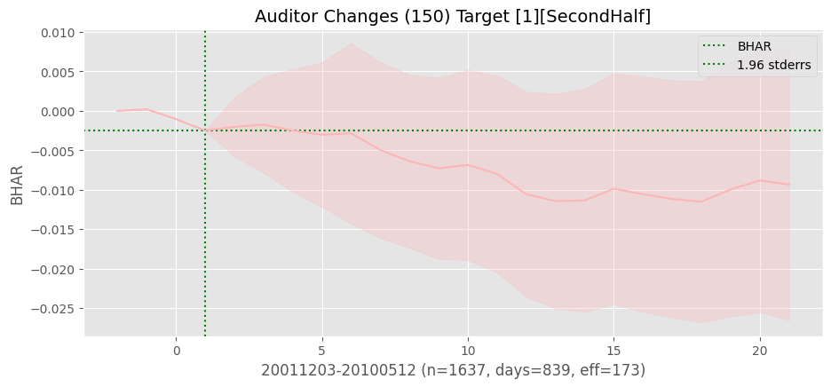
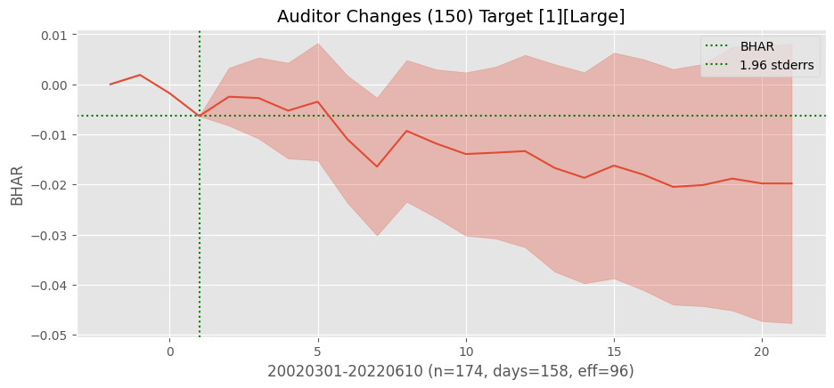
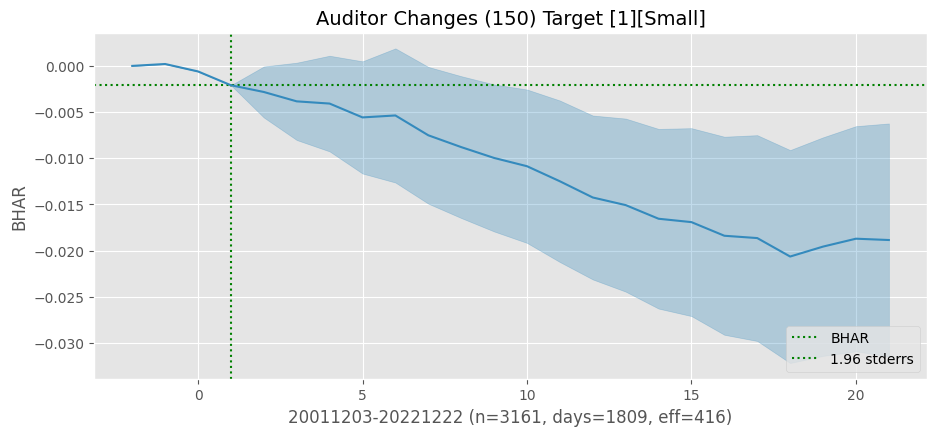

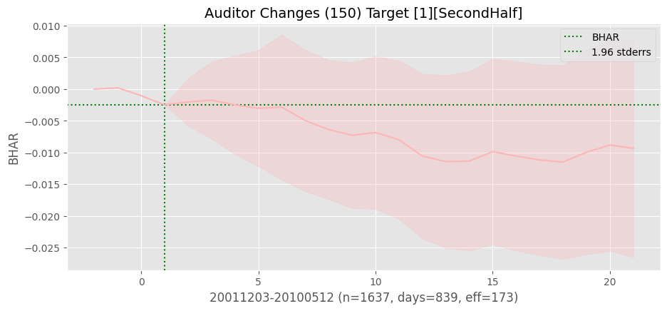
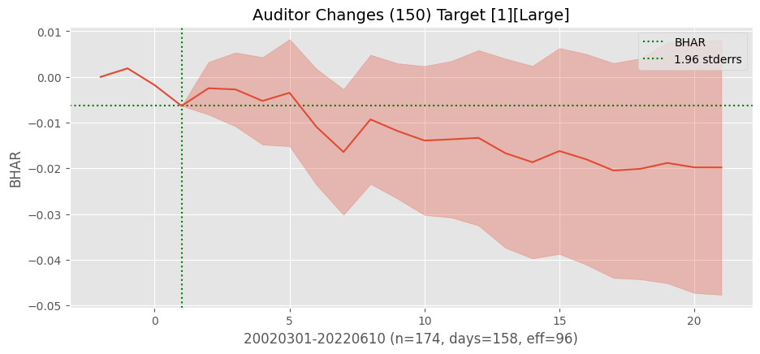
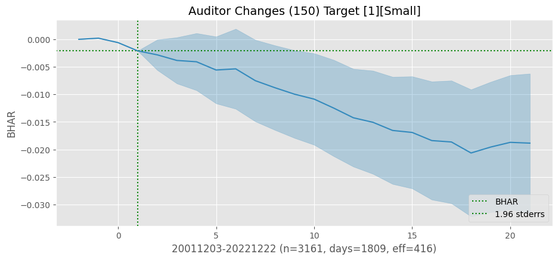
### Show by market cap and half-period
events_list = [[80,1], [26,1]] # top announcement window
for i, (eventid, roleid) in enumerate(events_list):
#eventid, roleid = 50, 1
#eventid, roleid = 83, 1
df = event_pipeline(eventstudy,
stocks=crsp,
eventid=eventid,
roleid=roleid,
beg=beg,
end=end,
left=left,
right=right,
post=post)
halfperiod = np.median(df['announcedate'])
sample = {'FirstHalf': df['announcedate'].ge(halfperiod).values,
'SecondHalf': df['announcedate'].lt(halfperiod).values,
'Large': df['cap'].ge(midcap).values,
'Small': df['cap'].lt(midcap).values,
'': []}
for ifig, (label, rows) in enumerate(sample.items()):
fig, ax = plt.subplots(clear=True, figsize=(10, 5))
bhar = eventstudy.fit(model='sbhar', rows=rows)
eventstudy.plot(model='sbhar',
title=eventformat(eventid, roleid) + f"[{label}]",
drift=False,
ax=ax,
c=f"C{i*5+ifig}")
plt.savefig(imgdir / (label + f"{eventid}_{roleid}.jpg"))
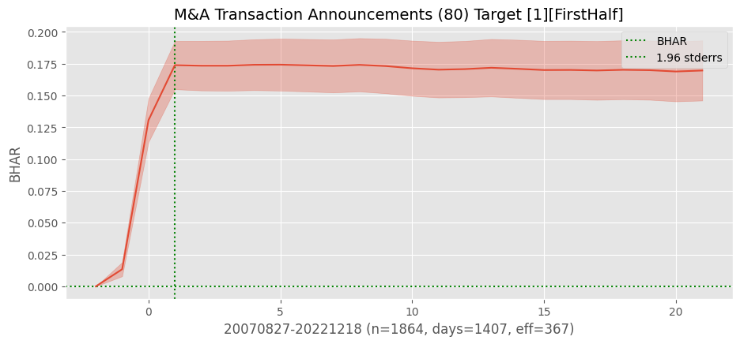
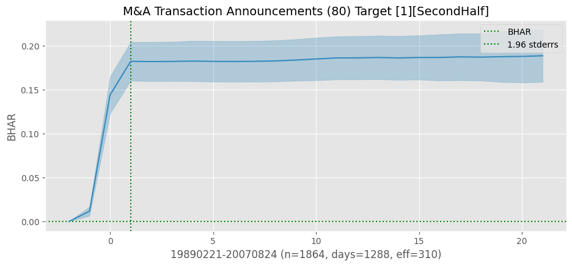
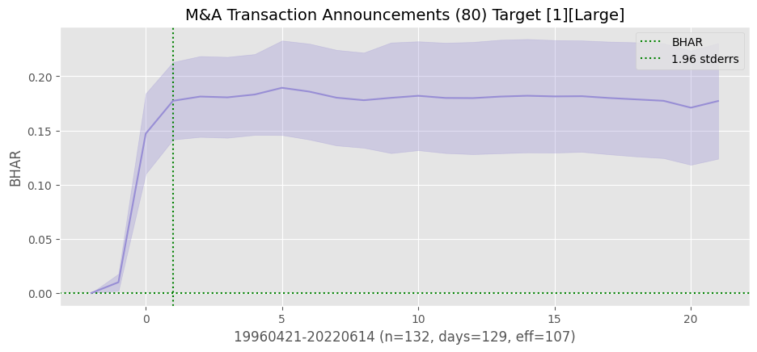
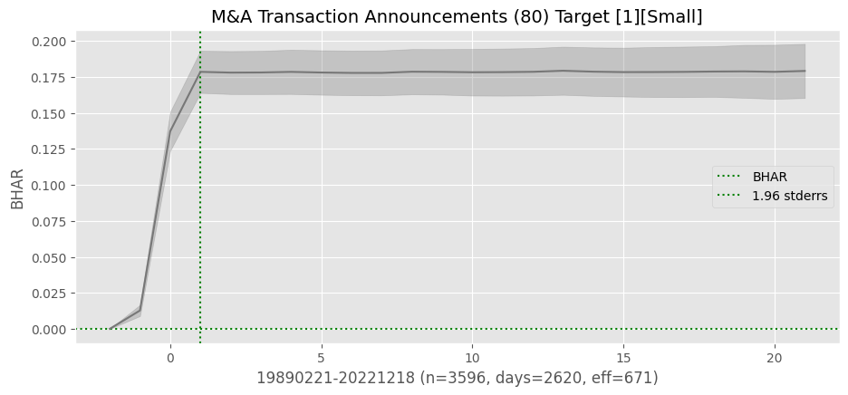
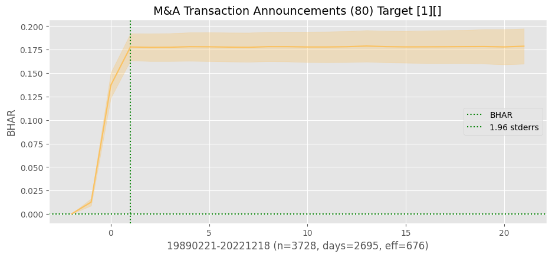
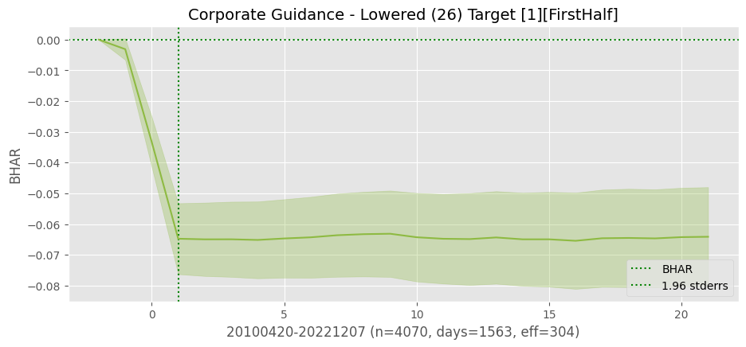
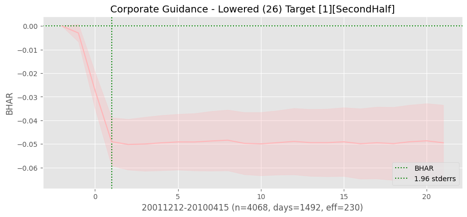
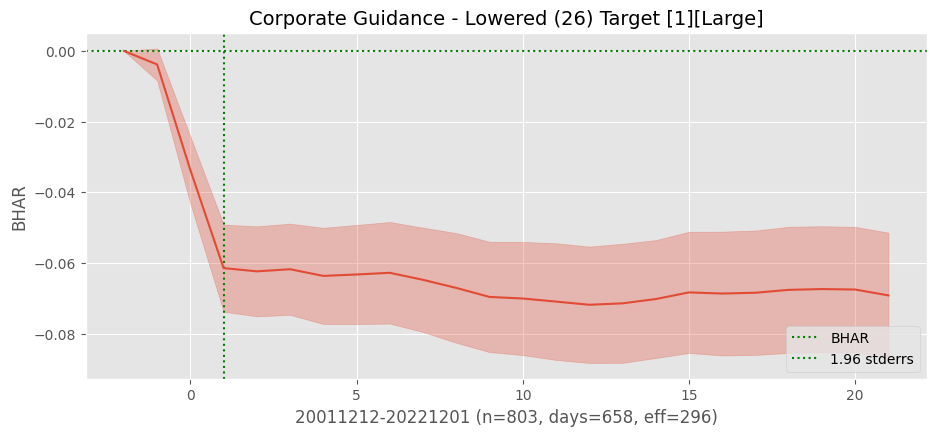
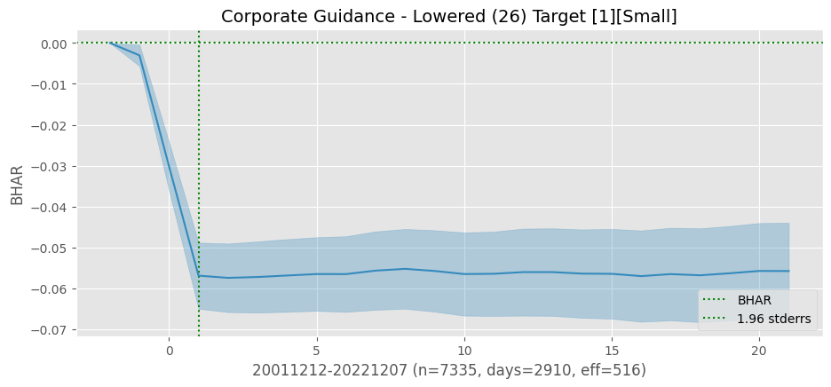
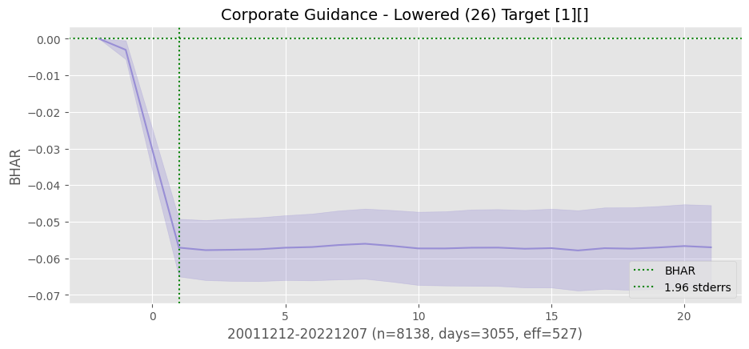
Compute BHAR and CAR of all events
restart = 0
for i, eventid in tqdm(enumerate(events)):
if eventid <= restart: # kludge to resume loop
continue
for roleid in roles:
# retrieve all returns observations of this eventid, roleid
df = event_pipeline(eventstudy,
stocks=crsp,
beg=beg,
end=end,
eventid=eventid,
roleid=roleid,
left=left,
right=right,
post=post)
if df['announcedate'].nunique() < minobs: # require min number of dates
continue
# compute both BHAR and CAR averages, then plot and save
bhar = eventstudy.fit(model='sbhar')
car = eventstudy.fit(model='scar')
#eventstudy.write()
eventstudy.write_summary()
#print(eventstudy.label, eventid, roleid)
show(DataFrame.from_dict(car | bhar, orient='index'))
fig, axes = plt.subplots(2, 1, clear=True, figsize=(5, 5), num=1)
eventstudy.plot(model='sbhar', ax=axes[0], title=eventstudy.label,
fontsize=8, vline=[right])
eventstudy.plot(model='scar', ax=axes[1], title='',
fontsize=8, vline=[right])
plt.savefig(imgdir / f"{eventid}_{roleid}.jpg")
33it [11:47:02, 1289.68s/it]
Summarize BHAR’s of all events
# sorted by 3-day event window abnormal returns
df = eventstudy.read_summary(model='sbhar')\
.set_index('label')\
.drop(columns=['rho', 'tau', 'created'])\
.sort_values('window', ascending=False)
# convert (eventid, roleid) to multiindex
df = df[df['days'] > 500].sort_values('post_t')
multiIndex = DataFrame(df.index.str.split('_').to_list()).astype(int)
df.index = pd.MultiIndex.from_frame(multiIndex, names=['eventid', 'roleid'])
# show summary
df['event'] = keydev._event[df.index.get_level_values(0)].values
df['role'] = keydev._role[df.index.get_level_values(1)].values
show(df.set_index(['event', 'role']).drop(columns=['model']),
caption="Post-Announcement Drift")
Multiple Testing#
### Show actual two-sided p-values vs expected (with continuity correction)
pvals = list(norm.cdf(-df['post_t'].abs()) * 2)
argmin = np.argmin(pvals)
header = df.iloc[argmin][['event', 'role', 'days', 'effective', 'post_t']]\
.to_dict()
fig, ax = plt.subplots(1, 1, clear=True, figsize=(10, 9))
ax.plot(sorted(pvals))
ax.plot([0, len(pvals)-1], [0.5/len(pvals), (len(pvals)-0.5)/len(pvals)], 'r--')
ax.set_title('Distribution of p-values')
ax.legend(['actual', 'expected'])
plt.tight_layout()
plt.savefig(imgdir / 'pvals.jpg')
### Bonferroni, Holm and Benjamin-Hochberg methods
alpha = 0.05
results = {}
for method in ['bonferroni', 'holm', 'fdr_bh']:
tests = multipletests(pvals, alpha=alpha, method=method)
results[method] = header | {f'pval(alpha={alpha})': pvals[argmin],
'adj-pval': tests[1][argmin]}
show(DataFrame.from_dict(results, orient='index'),
caption="Multiple Testing methods")